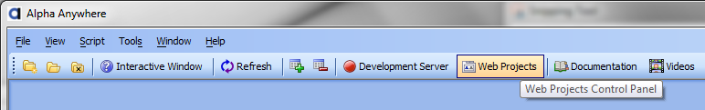
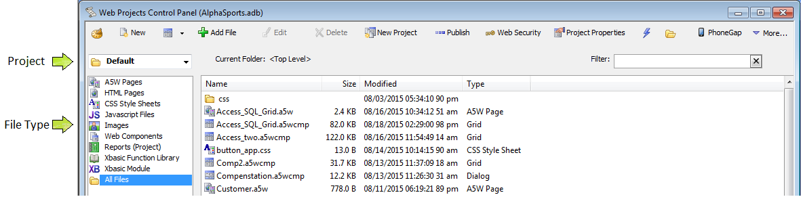
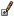
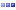
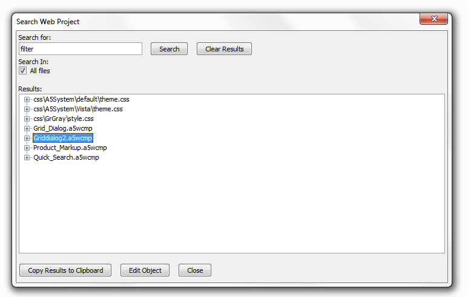
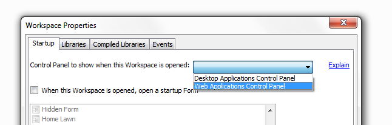

Web Projects Control Panel
A web project contains and organizes the files that you will
publish.
Alpha Anywhere places these files in a directory structure under the Alpha
Anywhere program folder. You may have as many projects as you
need, each with a distinctive name. The Web Projects
Control Panel provides a view of these projects. It also organizes all
of the files used in your web projects. Here you can:
-
Create
or delete named web projects
-
Shape
and manage pages
-
Design grid web components that connect with your database's tables, views,
and queries.
-
Develop UX web components
that act like forms, accept information from, and return information to users
-
Fashion grid linker and tabbed grid linker components, which integrate multiple grids components into a single control
-
Construct navigation components that integrate your application with menus
-
Devise login components that control who can enter your application
-
Make Reports and Xbasic Modules.
-
Generate and edit
cascading style sheets
-
Manage all page components (including ancillary files, such as images
and style sheets)
-
Forge application variables that will be available to all pages within a project
-
Preview any grid, dialog, or page component in your Internet browser
-
Build folder aliases that make your projects able to run in different folders
on different computers
-
Form one or more profiles that define how and where to publish your finished
pages
-
Publish your finished pages to local (LAN) servers using Windows networking
services or remote servers using FTP
|
1. To open the Web Projects Control
Panel, click Web Projects on the main toolbar.

Viewing a Project's Files
To view the files used in a project, select the
project
name from the drop-down list box at top left. To see all files
in the project "All Files". To filter the list of files shown,
select any of the following:
|

Project and File Type Selectors
| |
|
Recently Selected Projects |
Shows
the recently selected web projects.
|
| |
|
New Component or File
|
Opens the New File
Dialog. You can create A5W, HTML, CSS, Javascript, Xbasic
functions and Modules, and Web Component Files here.
|
| |

|
Create A New Grid Component |
Open the
Grid
Builder after first opening the Select
Grid Component Template dialog.
|
| |
|
Add File |
Opens a Windows dialog that lets you add a
file from your computer.
|
| |

|
Edit File |
Opens a file to be edited in the Builder or
Editor that corresponds to the file's type.
|
| |
|
Delete File |
Deletes a file.
|
| |
|
New Project |
Opens the Select Project
Template and creates a new project.
|
| |

|
Publish |
Lets you publish your applications to the Web,
so that your users can use it.
|
| |
|
Security |
Lets you set the
security for your project, for
all of its components, pages, users, and more.
|
| |
|
Project Properties |
Allows you to set properties for your web
project. When you publish a project these properties are publish
with it.
|
| |
|
Working Preview |
Allows you to run a file without having to
turn on the server. The Working Preview is useful for debugging
in this regard.
|
| |
|
Open Project Folder in Windows
Explorer |
Opens Windows Explorer so you can easily open
your Alpha Anywhere from Windows.
You can also access Windows
Explorer by click Edit > Open Project in Explorer.
|
| |
|
PhoneGap |
Allows you to build applications that run on
mobile phones.
|
Finding a File
To find a file select Edit > Search in all Web
Project files... to display the Search Web Project
dialog. Enter text to search for and click Search.
To edit an object, select it in the list and click Edit
Object.

Web Projects Control Panel - Filter
The Web Projects Control Panel has a filter prompt. This is useful when you have a large number of files in a web project and you want to find a file quickly.
The list of files displayed will automatically change to match
whatever you type. The Filter: is
in the top right corner on the Web Projects Control Panel
toolbar.
|
1. Start typing the name or extension of the File you want to find. You can
select All Files in the File Type menu to search
your entire project.

Show the Web Projects Control Panel Automatically for a Workspace
The
File|Workspace Properties menu
has a setting that allows you to automatically open either the
Web Projects Control Panel or the
desktop control panel when your Workspace opens. This way you
can go directly to the set of tools you use most frequently in
Alpha Anywhere.
|
1. Open the File drop-down on the Alpha
Anywhere toolbar and click on Workspace Properties.

2. The Workspace Properties Dialog will open.
On the Startup tab select
Web Applications Control Panel in the 'Control Panel to show when
this Workspace is opened:' drop-down.
3. The Web Projects Control Panel should now open when you open your
workspace.

Limitations
Web publishing applications only.
Application Global Variables
- Web Project Properties
Help Topics for Controls - Project Help Table
PDF Printing via Microsoft XPS Printer Driver Web Project Properties
Project Style
Restore Component from Backup
Revised New Web Component Dialog
Video Finder
Web Application Repository
Web Project Properties
Work Queue
JQuery Support, Action Javascript Improvements,
a5w_SaveToWebAppRepository Function,
a5w_GetFromWebAppRepository Function,
a5w_enumerateWebAppRepository Function,
a5w_DeleteFromWebAppRepository Function,
email_send_noprofile Function,
a5_getWebProjectProperties Function,
a5w_SaveToWorkQueue Function